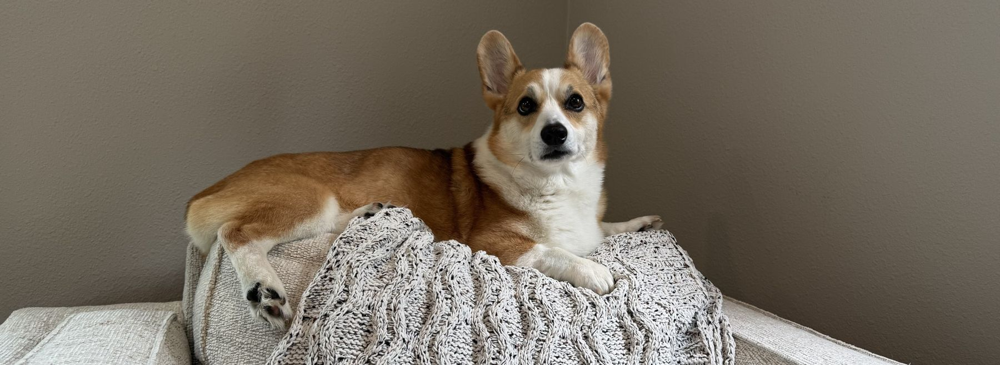
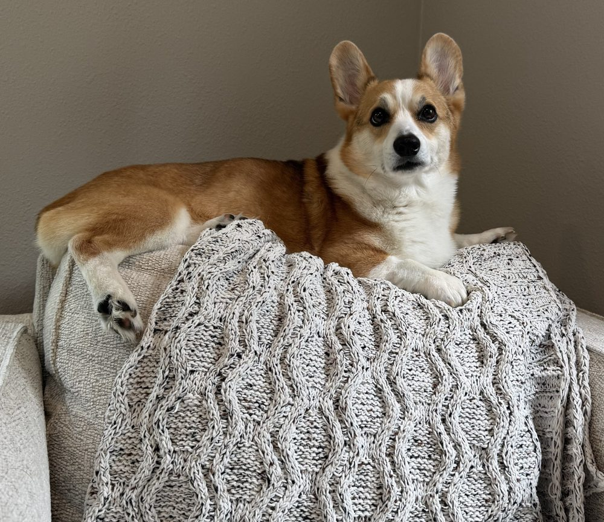
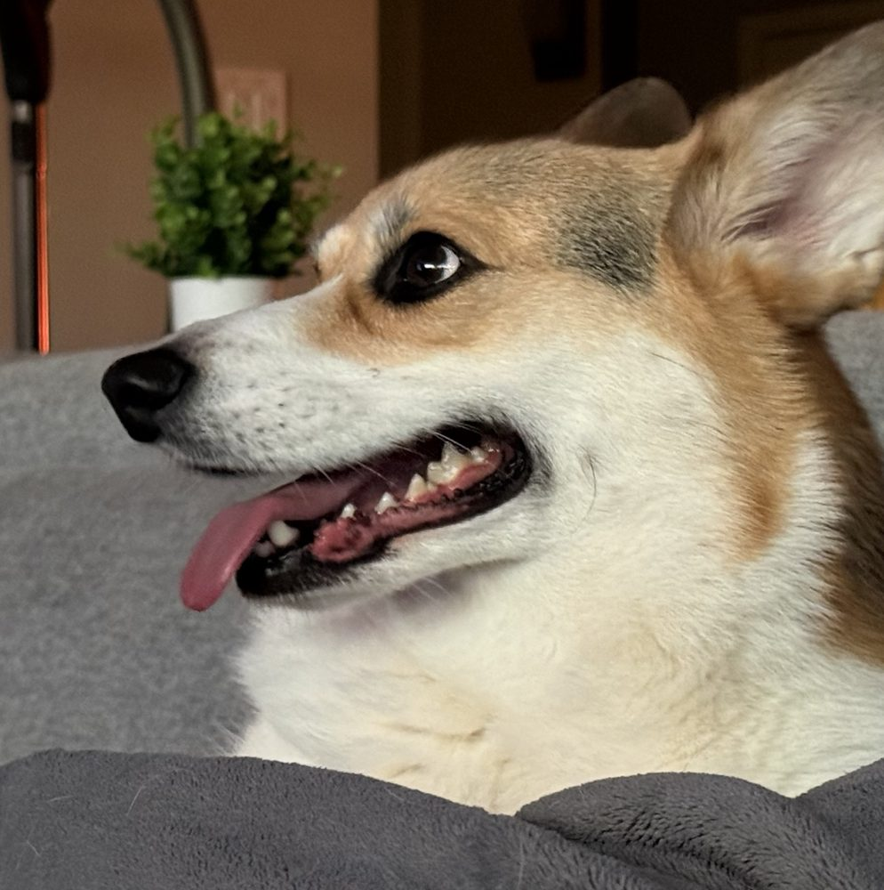

Corgi.com has one purpose: corgis. Everything else, including you, is a rounding error. Founded by Max and Benji, who did not ask for your input and will not be taking it.

Max, reviewing your application. It is not going well.
Our purpose
We have been asked whether a website needs a purpose. We have one. It is short, low to the ground, and it will outlive your furniture.
Horizontal dominance
Every flat surface in the home is corgi territory. The couch was annexed in a single afternoon. The bed fell soon after. Negotiations for the kitchen floor continue whenever anything is dropped.
The crumb belongs to us
Food that touches the floor has been returned to its rightful owner. Food still in your hand is merely on loan.
Everything ends
Toys, socks, your favorite shoes, the squirrel's patience. We are simply here to help things along.
The founders

Max
Chief Executive Corgi
Max founded corgi.com after realizing the internet contained several pages that were not about him. He runs the company the way he runs the couch: from the highest available point, without blinking. Max does not hold meetings. He holds eye contact until you give up.
Favorite food: whatever you are eating. Least favorite word: “off.”

Benji
Chief Operating Corgi
Benji handles operations, security and the vacuum, which you can see in the background of his official portrait. He has outlasted every vacuum this household has owned. He is aware of this one. It is aware of him.
Favorite food: also whatever you are eating. Hobbies: smiling at things that should be worried.
A brief history
Day one Born. Inspected the food bowl. Found it too small. Filed the first of many complaints.
Week nine Acquired a human through a process the human still describes as “adopting a puppy.”
Month four The Sock Incident. We do not discuss the Sock Incident. The sock does not discuss anything anymore.
Year one Max and Benji merge operations. The household is informed afterward.
Today Corgi.com launches. Expansion into the remaining half of the couch is underway.
Annual report
Fur shed this year
Enough to build a third corgi. Engineering is working on it.
Squirrels caught
Zero. The war continues.
Mail carriers warned
Daily. They keep coming back. We admire the courage.
Vacuums outlived
All of them, so far.
Questions
Can my cat join?
No.
Why are their legs so short?
Corgis were built close to the ground for herding cattle, which required ducking kicks. Today the same design is used to duck responsibility. Please do not mention the legs in front of the founders.
Is anyone in charge of the humans?
Yes. Everyone you know is managed by a dog, or will be eventually. The humans who seem free simply have not been told.
How do I contact corgi.com?
Open a bag of cheese anywhere in your home. Someone will be with you shortly.